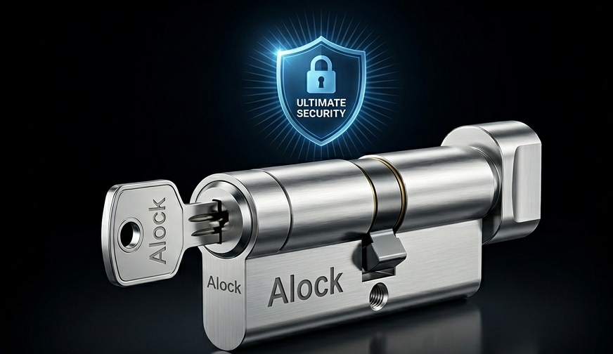

עברתם דירה?
איבדתם מפתח?
הצילינדר הישן נתקע או נשחק?
החלפת צילינדר היא הדרך הבטוחה והמהירה
לשדרג את רמת האבטחה של הבית או העסק.
ALock מספקת שירותי החלפת צילינדרים
מקצועיים תוך שימוש במוצרים איכותיים
מהחברות המובילות בשוק.

אנו מסייעים בבחירת הצילינדר המתאים ביותר לצרכים שלכם ומבצעים התקנה מקצועית עם אחריות מלאה על העבודה.